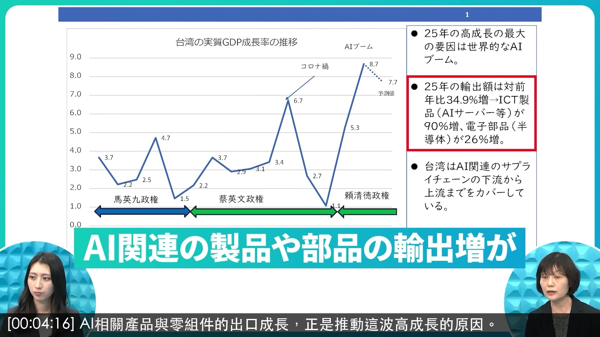
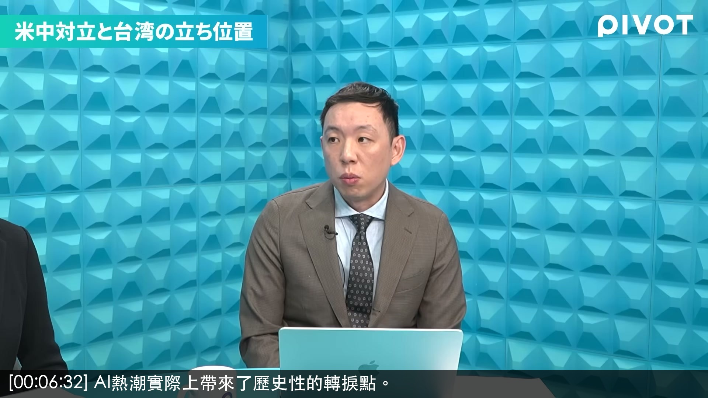
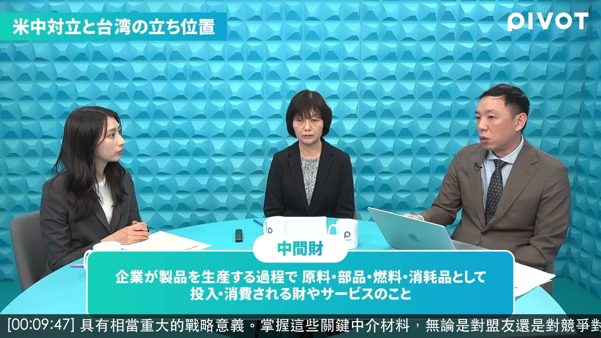
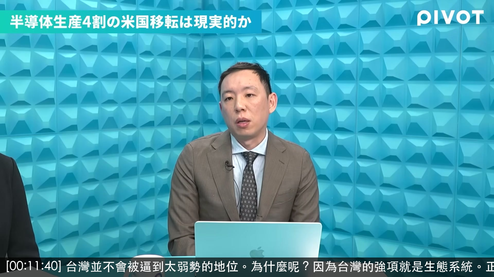
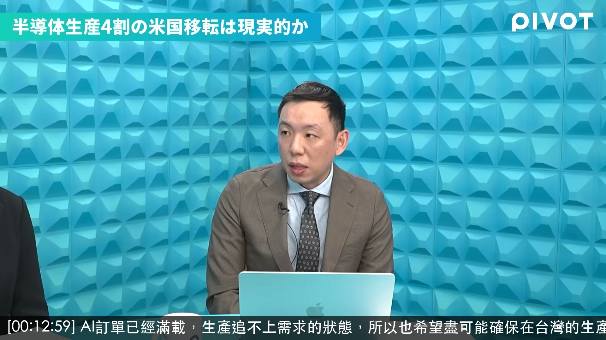
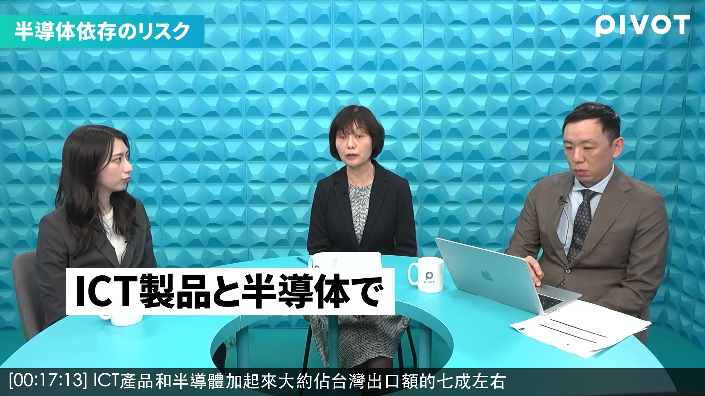
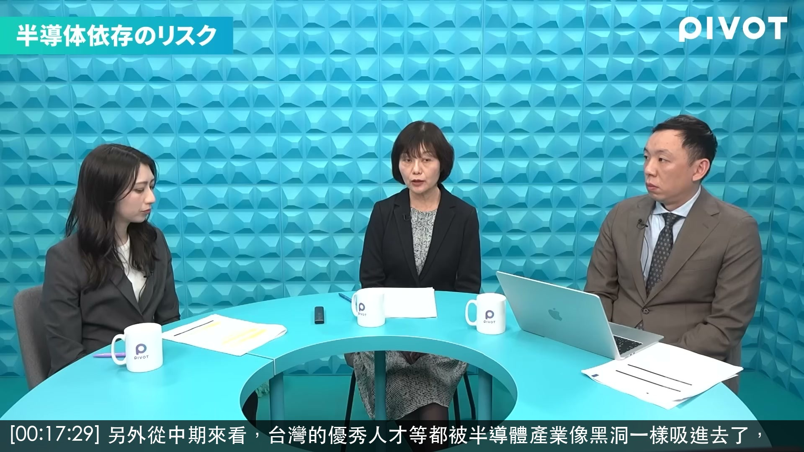
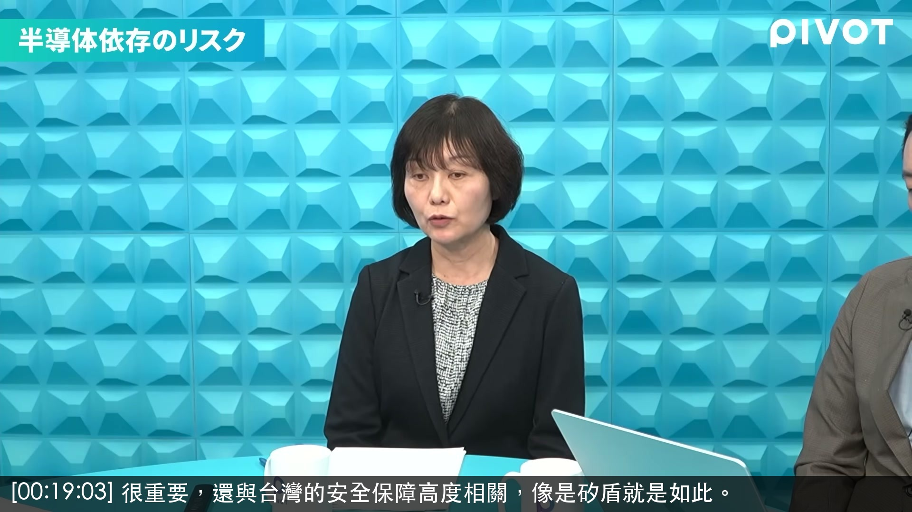
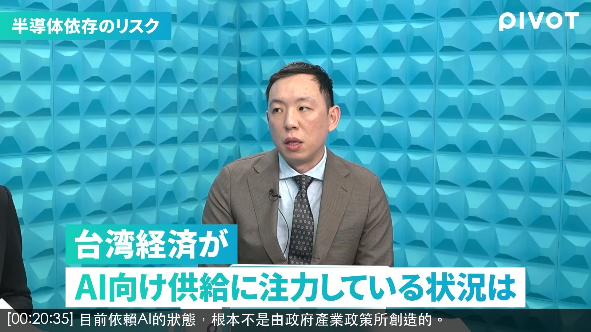
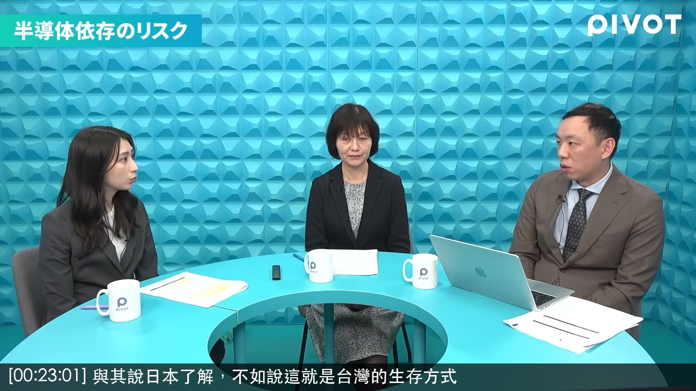

原片：YouTube
GDP創15年來新高，台灣這個成長率真的是驚人的數字。
GDP15 年ぶりの高水準台湾のこの成長率はま本当に脅異的な数字です。
人均GDP方面，台灣在2024年已經超越日本。
で、ま、すでに、えっと、1人当たり GDPで日本をもう2024

AI相關產品與零組件的出口成長，正是推動這波高成長的原因。
AI 関連のあの製品、ま、部品の輸出像というのが、ま、この高成長を引き起こしているわけです。

AI熱潮實際上帶來了歷史性的轉捩點。
AI ブームに、ま、実際、ま、歴史的な転換点を、えっと、与えたんというような面があります。

具有相當重大的戰略意義。掌握這些關鍵中介材料，無論是對盟友還是對競爭對手國，都擁有經濟安全保障的籌碼。
1 つあ、かなり大義な戦略というような意味がありまして、は、まぱこういうようなその中罪、河してる中剤を、えっと、持てば自分の有効に対しても自分のライバル適対国に

台灣並不會被逼到太弱勢的地位。為什麼呢？因為台灣的強項就是生態系統。正如剛才川上老師所說，台灣擁有健全的供應鏈和製造業生態系統。
ただし、あの、想像よりいい台 は、えっと、弱い立場にたされることでもないように思いますね。なぜかと言うと、やっぱりその台湾の強み度は何かていうと、エコシステムで

AI訂單已經滿載，生產追不上需求的狀態，所以也希望盡可能確保在台灣的生產。
AI なんで注文がもうすでにいっぱいで生産があのリマンドにあの追いつかない状態なのでまできる限りあの台湾での生産も確定して欲しいというようなまなんです。
川普總統還有一個令人在意的發言，就是說美國的半導體被台灣偷走了。這到底是什麼意圖呢？
ていう風に見ています。なるほど。もう1 つちょっとトランプ大統領の発言で気になるのがこうアメリカの反動体は台湾に盗まれたというようなことを言っている。そうでこれ
是否變成了一條腿走路的狀態呢？這方面的隱憂如何？是的，坦白說我覺得確實存在這個問題。
1 本足打法みたいな感じになってしまってる可能性あるのかっていうも、この懸念の部分かがですか?あ、はい。あの、ま、それは正直やっぱりあると思うんですね。

ICT產品和半導體加起來大約佔台灣出口額的七成左右
あの、ま、ICT製品と反動体と合わせて 大体台湾の輸出額の7割くらいを占めてる

另外從中期來看，台灣的優秀人才等都被半導體產業像黑洞一樣吸進去了，
が、ま、1つですね。 で、あと、ま、少しこう中期的に、ま、考えてみるとやっぱり反動体産業にあの台湾のあの、ま、ハく人材とかも含めてですね、あの本当にこうブラック

很重要，還與台灣的安全保障高度相關，像是矽盾就是如此。
で、重要だっていうだけではなくって、 あの、台湾の安全保障ともかなり結びついているシリコンシールドとかそうですよね。

目前依賴AI的狀態，根本不是由政府產業政策所創造的。
AI に、あの、サしているような状態はそもそも政府によって作られた産業政策ではないです。

與其說日本了解，不如說這就是台灣的生存方式
1日本は知った方よりもそれはやっぱり その要は台湾の生き方かなと、ま、こちら
要牽制TSMC所建構的那種幾乎不可取代性，目前還做不到
TSMC が構築しているようなその大体不可能性っていうのを牽制するまでには至っていない